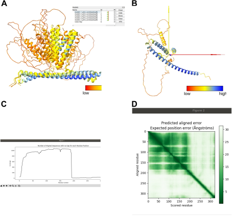

5. Get the initial model with AlphaFold2¶
In this section of the alphaFold tutorial we cover the first steps in the small workflow addressed to get the structure AlphaFold2 initial model and process it (Fig. workflow)
Predicting the three-dimensional (3D) structure of a protein from its sequence alone remains an unsolved problem. However, some programs as AlphaFold2 are able to predict the 3D atomic coordinates of a large collection of folded protein structures with remarcable accuracy [Jumper et al., 2021], [Evans et al., 2021].
Alphafold2 execution can take up to hours for a single protein, it needs more than 2 TB of disk space and the use of a GPU card is recommendable to speed up the execution of processes. The Scipion protocol chimerax-alphafold prediction has implemented the possibility of running Alphafold2 in your own computer selecting the option Local AlphaFold (Fig. 5.4 (4), see Appendix for details).
{kind=link}
There are, nevertheless, different options that enable researchers retrieve AlphaFold2 predicted models if they lack of these computational resources and, with this aim, the Scipion protocol chimerax-alphafold prediction has also implemented three options to retrieve AlphaFold2 predicted models. The first two options take advantage of the AlphaFold protein structure database and give users the possibility of retrieving AlphaFold predicted models of the protein in which users are interested (option EBI Database (identical sequence), Fig. 5.4 (1)) or, if that protein is not included in the database yet, of a homologous protein (option EBI Database (homologous sequence) Fig. 5.4 (2)). Look at Appendix for use cases. Take into account, however, that although the database is constantly growing with new additional predictions, the protein relevant for the user might not have close homologous. Executing Alphafold2 is thus required. The third option implemented in the Scipion protocol chimerax-alphafold prediction enables the user run the program taking advantage of two independent solutions based on Google Colaboratory (Fig. 5.4 (3), option Google Colab) involving Phenix and Chimera21 Colab Notebooks, respectively.
In this tutorial we will use one of the solutions involving the option Google Colab to create an initial atomic model of the protein TACAN. As mentioned before TACAN is a homodimer of the protein with Uniprot ID A0A024R4K9. Let us start by importing the sequence A0A024R4K9 (Fig. 5.5) using the protocol pwem-import-sequence. Clomplete the protocol form with your prefered name of the sequence (1), the type of sequence (2, aminoacids), the database source (3, UniProt), and the UniProt ID (4). Finally, execute the protocol (5). Look at protocol appendix for details.
{kind=link}
Protein sequences are the only input required to predict the atomic structure of a complex running AlphaFold2. Templates from PDB or a particular user’s template can also be included as inputs depending on the Colab Notebook. In this tutorial we are going to execute two different examples using Phenix and Chimera21 Colab Notebooks, respectively, in the Scipion protocol chimerax-alphafold prediction.
5.1. AlphaFold initial model of monomer¶
In the first one we will execute AlphaFold2 based on Phenix Colab Notebook and a single copy of the sequence as input. Fill in the protocol form as indicated in Fig. 5.6. Select Google Colab option (1), Phenix Colab Notebook (2), include the sequence of TACAN protein (3) and execute the protocol (4). For details go to protocol appendix.
{kind=link}
After executing the protocol a couple of warning messages usually appear (Fig. 5.6 (B and C)). Accept them with OK and Run anyway, respectively, to run the AlphaFold2 prediction. The browser of Phenix Colab Notebook them will start to run, as you can observe in each of the independent running cells (Fig. 5.7 (3, 4)), although control running and stopping of all of them is possible openning the Runtime menu (Fig. 5.7 (1)). Take into account that you need a Google account (2) and the sequence of the protein should be written in the form (4).
{kind=link}
When the execution finishes, since the default option Show results in ChimeraX has been set (Fig. 5.6 (A)), the prediction structure of TACAN protein will be opened in the ChimeraX GUI. The user can close this ChimeraX session if (s)he doesn’t save any modification in the structure. After clicking Analyze Results in the Scipion framework, the output result of AlphaFold2 execution can be visualized anyway (Fig. 5.8).
{kind=link}
The unique prediction structure of TACAN protein (Fig. 5.8 (A, model #2)) is colored according to the Model Confidence score. The reoriented model observed in Fig. Fig. 5.9 (A) helps to observe in detail colors of the two helices diametrically opposed (1 and 2) and connected by linker 3. As you can check in “How confident should I be in a prediction?” in AlphaFold Protein Structure Database FAQ, only the residues of alpha helixes (1 and 2) display acceptable confidence pLDDT values (color blue and close to blue), although the confidence of helix 1 residues seems to be better than the observed for helix 2. The residues included in ribbons (yellow and orange) are disordered and can’t be interpreted in general.
{kind=link}
Regarding the relative position of domains inferred from PAE plot (Predicted Aligned Error plot reporting AlphaFold’s expected position error at residue x, when the predicted and true structures are aligned on residue y. Look at “How should I interpret the relative positions of domains?” in AlphaFold Protein Structure Database FAQ for a detailed explanation) several conclusions can be extracted. The big dark green square of the upper left corner (Fig. 5.8 (B)) corresponds to the N-terminal part of the protein where two sub-domains are included (Fig. 5.9 (B, 1 and 2)). These domains are the two alpha helixes 1 and 2 of Fig. 5.9 (A). The relative orientation of these two sub-domains is assessed by the orange squares (Fig. 5.9 (B, 3)). Although the error values of these squares are worse than the error values of sub-domains 1 and 2, they are still much better than the background, indicating that the relative position of the sub-domains might be quite close to the real one. The orientation of the yellow linker represented in Fig. 5.9 (A, 3) could be quite reliable.
A similar prediction could have been obtained using the Chimera21 Colab Notebook. We have completed the protocol with this aim, as shown in Fig. 5.10 (A). Again, the option Google Colab has been selected (1), as well as the Chimera21 Colab Notebook (2). To avoid using more computational resources than are available from Google Colab, we maintain the default option to Skip Amber relaxation (3). The last step of molecular dynamics performed with the best prediction structure is thus skipped, which also save processing time. Take into account that surpassing the available resources might drive to the prediction failing. And finally, the sequence of the TACAN protein has been included (4).
{kind=link}
Compared with the browser of Phenix Colab Notebook, the browser of Chimera21 Colab Notebook contains only one running cell (Fig. 5.10 (B)). Check that the protein sequence has been included before starting the running. In this particular case, upstream the sequence appears the command “dont_minimize” referring the option Skip Amber relaxation.
When the run time finishes, the 5 resulting unrelaxed models of TACAN will appear in the ChimeraX GUI (Fig. 5.11 (A)). Remark that Phenix Colab Notebook retrieves a unique structure prediction. Observing one by one the predicted structures two conclusions can be inferred: a) Residues from the horizontal helix show on average better confidence score values than residues from vertical helixes. b) Comparing the five predictions, the agreement in the prediction of the horizontal helix seems to be higher that in the prediction of the vertical helix. c) There are accuracy differences among predictions and one displays the highest confidence score values. This model (number #3 in Models panel) is the best model. Rotate, show and hide models to confirm the result.
Fig. 5.11 Prediction of TACAN protein structure obtained using the Chimera21 Colab Notebook. A: 5 structure predictions visualized in ChimeraX GUI. B: Best structure prediction of TACAN protein displayed in the ChimeraX viewer. C: Plot Number of Aligned Sequences with no Gap for each Residue Position. D: PAE plot.¶
{kind=link}
The best model is individually displayed in the ChimeraX GUI viewer opened adter clicking Analyze Results (Fig. 5.11 (B)). A couple of additional plots are opened simultaneously. The first one is the plot Number of Aligned Sequences with no Gap for each Residue Position that provides the map of the multiple alignment coverage, that is, given a multiple alignment containing N proteins how many of these N proteins contain each one of the problem protein aminoacids (Fig. 5.11 (C)). This plot shows on the left the residues with high coverage of aligned sequences. This part of the sequence coincides with the N-terminal end of the protein for which AlphaFold2 achieved a quite fair prediction. The C-terminal part of TACAN doesn’t show a minimum coverage of aligned sequences, thus avoiding the structure prediction of that sequence.
PAE plot is the second plot opened to visualize the results (Fig. 5.11 (D)). Quite similar to the same plot obtained from Phenix Colab Notebook (Fig. 5.9 (B)), the PAE plot obtained with Chimera21 Colab Notebook shows a slightly better prediction of the inter-domain linker.
If you try to superpose the models generated both with Phenix and Chimera21 Colab Notebooks with the Scipion protocol Superpose PDBs you will see that ther not an obvious superposition. This indicates that both prediction models are quite different in the spatial orientation of helixes, which was expected due to the low accuracy of residues that are not included in the two helixes.
5.2. AlphaFold initial model of multimer¶
One interesting advantage of Chimera21 Colab Notebook compared with Phenix Colab Notebook is that the first one enables structure prediction of multimers. As it was mentioned before TACAN protein oligomerizes as a homodimer and we can predict directly the structure of this protein complex using AlphaFold2.
Let us execute again AlphaFold with the protocol chimerax-alphafold prediction completing it with two identical sequences of TACAN that should be part of the homodimer. Observe that this is the only one difference between the prediction of the monomer (Fig. 5.10 (4)) and dimer (Fig. 5.12 (1)).
{kind=link}
When the run time finishes, the 5 resulting unrelaxed models of TACAN homodimer will appear in the ChimeraX GUI. This window can be closed if no modifications are saved. Then clicking on Analyze Results three windows will pop-up again allowing the visualization of the best homodimer structure prediction (Fig. 5.13).
{kind=link}
Concerning the confidence score values of each residue (Fig. 5.13 (A)), we can see that most of the residues included in the N-terminal part of the protein (helix 1-linker-helix 2) seem to show better confidence scores in the homodimer than in the monomer prediction. The PAE plot (Fig. 5.13 (B)) shows a small error for this part of the protein in each monomer (boxes 1 and 2), as well as the relative position between the N-terminal parts of each monomer (boxes 3). Of course, the disordered region continues disordered in the dimer, mainly because no additional sequences have been found to align in the C-terminal end of the TACAN protein, as can be observed in Fig. 5.13 (C).
comment best -> scipion onject // scipionwrite // amber relaxation // script mouse.py
# Is there any way to programmatically prevent Google Colab from disconnecting on a timeout? # Google Colab notebooks have an idle timeout of 90 minutes and absolute timeout of 12 hours. # This means, if user does not interact with his Google Colab notebook for more than 90 minutes, # its instance is automatically terminated. Also, maximum lifetime of a Colab instance is 12 hours. # # Run this code in your Desktop, Then point mouse arrow over (colabs left panel - file section) # directory structure on any directory this code will keep clicking on directory on every 30 seconds # so it will expand and shrink every 30 seconds so your session will not get expired Important # - you have to run this code in your pc